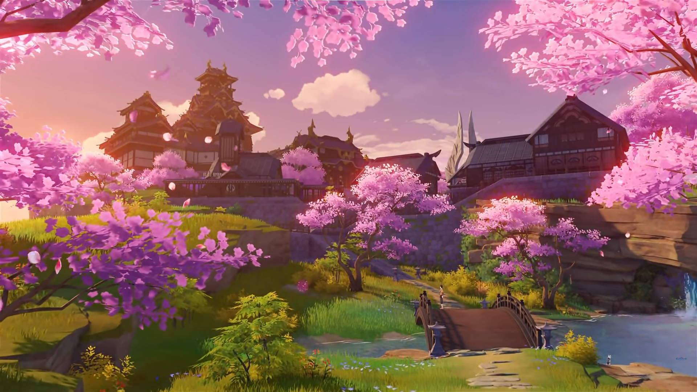

Inazuma

Inazuma is the electro region in the game and the next region after Liyue Inazuma is split into 6
islands:
Narukami island, Kannazuka island, Yashiori island, Watatsumi island, Seirai island and Tsurumi island.
Inazuma ingame is based on the real world Japan mostly in terms of culture and geogeaphy. Inazuma is
known
as the city of eternity. The citizens of Inazuma are set on eternalizing things like traditions and
memories. In Inazuma there is trouble going on with the Vision Hunt Decree led by the Raiden Shogun.
Visions
are being taken away as visions, sometihng that can give supernatural power, is an enemy of the eternity
of
the shogun. Inazuma is lead solely by the Raiden Shogun or Electro Archon. Unlike the other archons,
Raiden
Shogun runs free and is less secretive about her identity. Inazuma is also lead by 3 commissions that
being
the Tenryou commission, the Yashiro commission and the Kanjou commission. The Tenryou commission is the
most
important as it is the executive arm of the Shogun.
Electro Archon
This is Raiden Shogun, the Electro Archon of Inazuma. Raiden Shogun is a master at manipulating
electro
and can even make whole thrunder storms out of this power. One notable feat of the Raiden Shogun is
how
she slayed a beast in one big slice and created a whole gorge. Like Barbatos, raiden Shogun was not
always the Electro Archon and took over after the previous one had passed. This is indeed Raiden
Shogun's true form and she goes around as a normal human. Unlike the other Archons, Raiden Shogun is
very open about being the Electro Archon. Today Raiden is Known as the supreme ruler of Inazuma who
manages the whole country even after the end of the Vision Hunt Decree. In order to save the
traveler
from Scaramouche, a fatui harbinger, an acomplice of the Shogun, Yae Miko, gave up the Gnosis of the
Shogun in exchange for the traveler's life. Even without the Gnosis, Raiden Shogun is still very
strong
and still fights well.
Geography and Regional Specialties
In Inazuma, it is mostly composed of mountains, forests and beaches. The forests in Inazuma are dark
and
barely any sun gets in, most notably the Chinju forest. Inazuma has many scattered beaches and
mountains
on each island. One gorge in particular, Musoujin Gorge was created by a single slash from the
Raiden
Shogun to slay a beast. Inazuma has its own regional specialties to upgrade various characters:
Sakura
Blooms, Dendrobium, Naku Weed, Sea Ganoderma, Onikabuto, Crystal Marrow, Amakumo Fruit, Sango Pearls
and
Flourecent Fungi. Most of these can be found in many places but things like Sango Pearls and
Flourecent
Fungi can only be found in Watasumi island and Tsurumi island respectively.